An Application for Photovoltaic Power Production Prediction
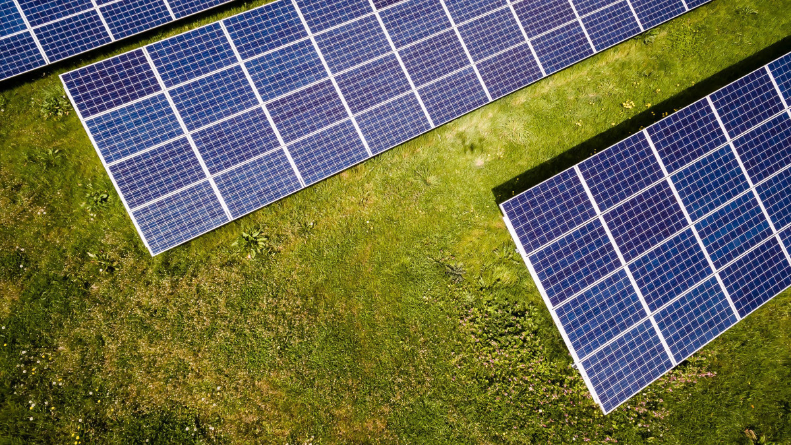
Brief
This project predicts power production from my own rooftop solar panels using machine learning. I collected real data from my PV system and built an interactive web app that forecasts daily energy production based on weather forecasts from a live API. The project showcases comprehensive machine learning skills from data preprocessing through model selection and deployment.
The Challenge
Having solar panels on my roof, I wanted to know how much energy I could expect to generate each day. Weather variability makes this prediction challenging - cloud cover, temperature changes, and seasonal patterns all affect solar production. I needed a system that could learn from my specific installation's historical data and provide accurate daily forecasts.
Data Collection & Preprocessing
The project began with collecting real photovoltaic production data from my rooftop solar installation. I gathered over 5 years of historical data including power output measurements (in kWh) and corresponding meteorological variables from multiple weather stations.
Data Sources:
- PV Production Data: Daily energy yield measurements from my solar panels
- Weather Data: Meteorological variables including temperature, precipitation, solar radiation, humidity, wind speed, and sunshine duration
- Geographic Data: Location coordinates for weather API integration
Data Cleaning:
- Removed zero and negative production values (nighttime/no-sun periods)
- Standardized datetime formats and timezone alignment
Feature Engineering
I engineered a set of features to capture the complex relationships between weather conditions and solar energy production:
Meteorological Features:
temperature_2m_mean/max/min (°C)- Daily temperature statisticsprecipitation_sum (mm)- Total daily precipitationshortwave_radiation_sum (MJ/m²)- Solar irradiancesunshine_duration (s)- Daily sunshine hoursdaylight_duration (s)- Total daylight hoursweather_category- Categorized weather codes (Clear, Partly Cloudy, Overcast/Precipitation)
Temporal Features:
month- Seasonal information for periodic patternsday_of_year- Cyclical day numbering
Exploratory Data Analysis
I performed comprehensive EDA to understand feature relationships and identify the most predictive variables:
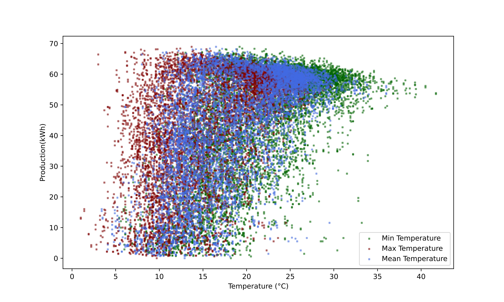
Temperature correlation with PV production

Multiple weather features vs production scatter plots
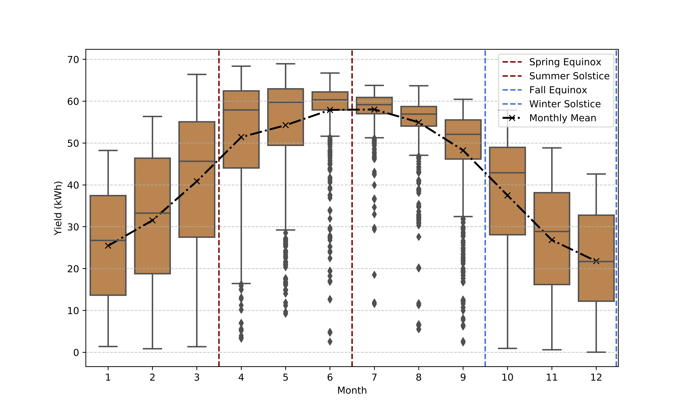
Seasonal production patterns

Solar irradiance correlation analysis
Baseline Model
I established a simple baseline model using the historical mean production value as predictions for all test days. This provided a reference point for evaluating more sophisticated models.
Implementation:
- Training data: 2019-2022 production values
- Test data: 2023 production values
- Prediction: Mean of training set for all test days
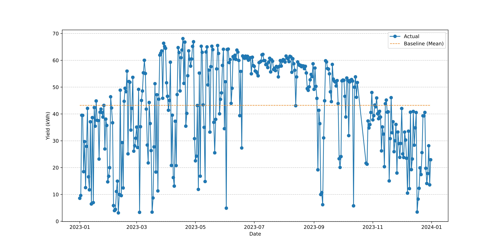
Baseline model evaluation metrics
Time Series Models: ARIMA & SARIMA
I implemented classical time series forecasting using ARIMA (AutoRegressive Integrated Moving Average) and its seasonal extension SARIMA.
ARIMA Model Selection:
- Stationarity Testing: Augmented Dickey-Fuller test to check for unit roots
- Parameter Selection: ACF/PACF analysis for p, d, q parameters
- Model Order: ARIMA(2,0,1) - 2 autoregressive terms, no differencing, 1 moving average term
SARIMA Extension:
- Seasonal Components: Added seasonal ARIMA terms for yearly patterns
- Seasonal Period: s=365 days for daily data with annual seasonality
- Model Order: SARIMA(2,0,1)(1,1,1)[365] with seasonal differencing
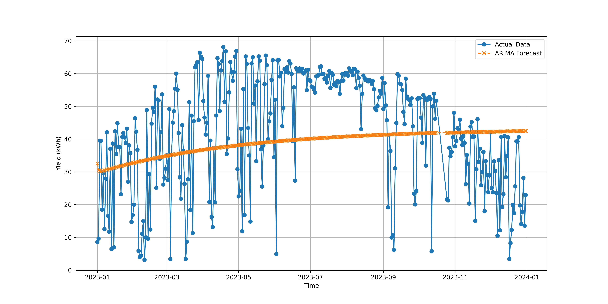
ARIMA model forecast vs actual production
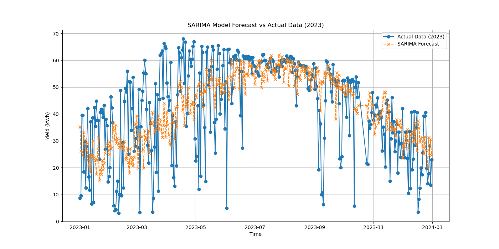
SARIMA seasonal decomposition
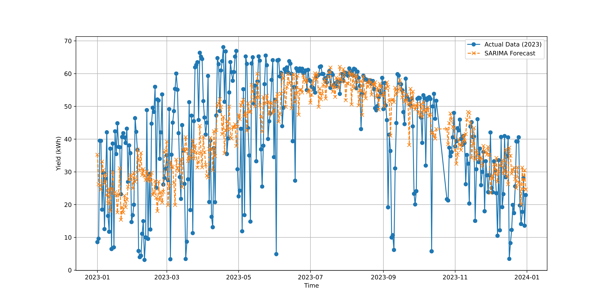
SARIMA model test performance
Deep Learning: LSTM Neural Network
For capturing complex temporal dependencies and non-linear relationships, I implemented a Long Short-Term Memory (LSTM) neural network.
Architecture:
- Input Sequence: 5-day lookback window of weather features
- LSTM Layers: 3 stacked LSTM layers with 128 hidden units each
- Dropout: 0.1 dropout rate for regularization
- Output: Single value prediction for next day's production
Data Preparation:
- Sequence Creation: Sliding window approach for temporal sequences
- Feature Scaling: MinMaxScaler for continuous features
- Categorical Encoding: Integer encoding for weather categories
- Train/Test Split: 2019-2021 for training, 2022-2023 for testing
Training Configuration:
- Optimizer: Adam with learning rate 0.001
- Loss Function: Mean Squared Error (MSE)
- Batch Size: 64 samples
- Epochs: 430 training epochs
- Hardware: GPU acceleration (NVIDIA RTX A4500)
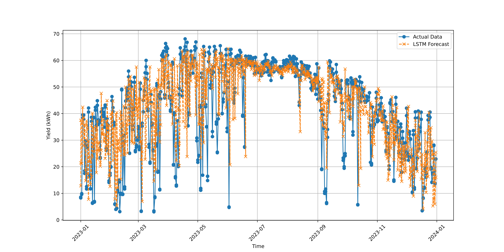
LSTM neural network predictions vs actual values
Model Evaluation & Comparison
I evaluated all models using comprehensive metrics and comparative analysis:
Evaluation Metrics:
- MAE (Mean Absolute Error): Average absolute prediction error
- RMSE (Root Mean Square Error): Square root of mean squared error
- R² Score: Proportion of variance explained by the model
- MBE (Mean Bias Error): Systematic over/under-prediction
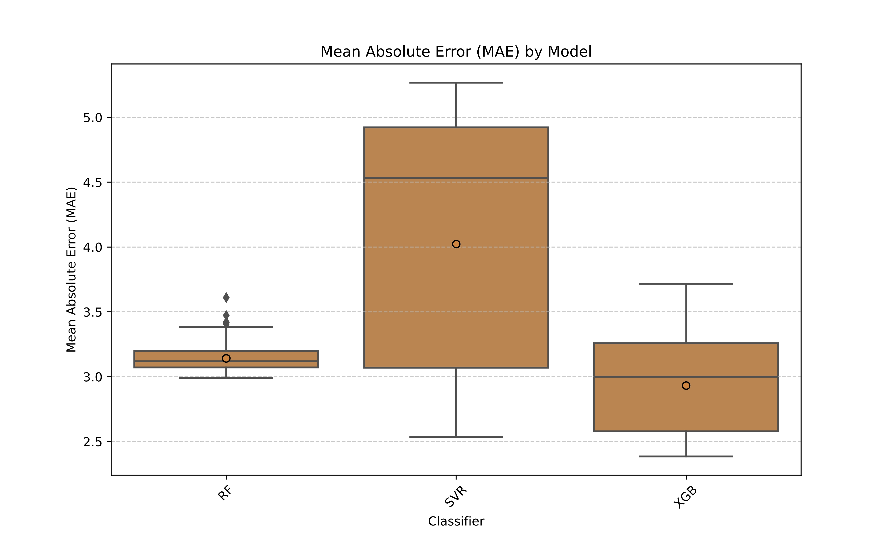
Mean Absolute Error across all models
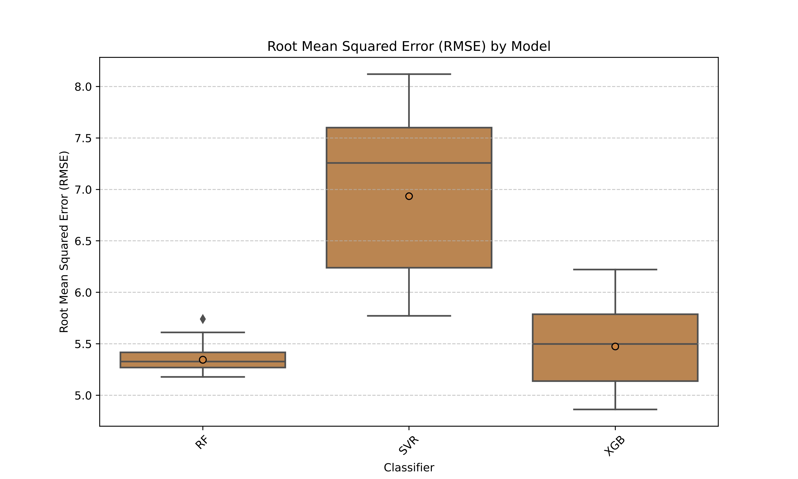
Root Mean Square Error comparison
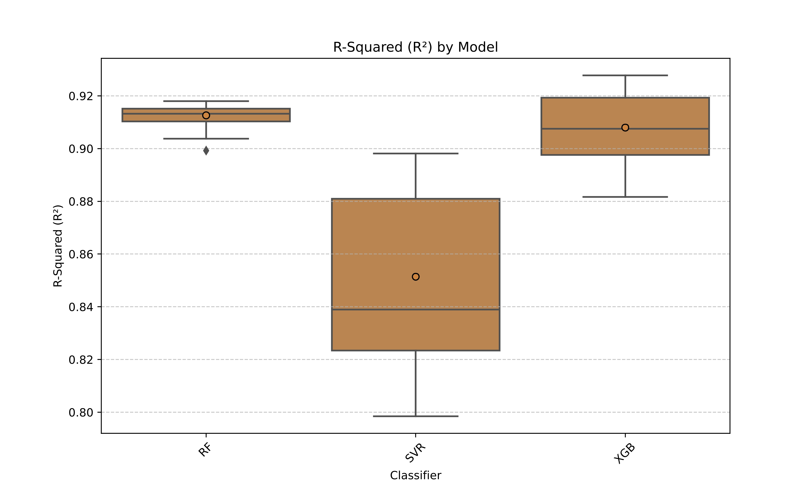
R² score distribution across models
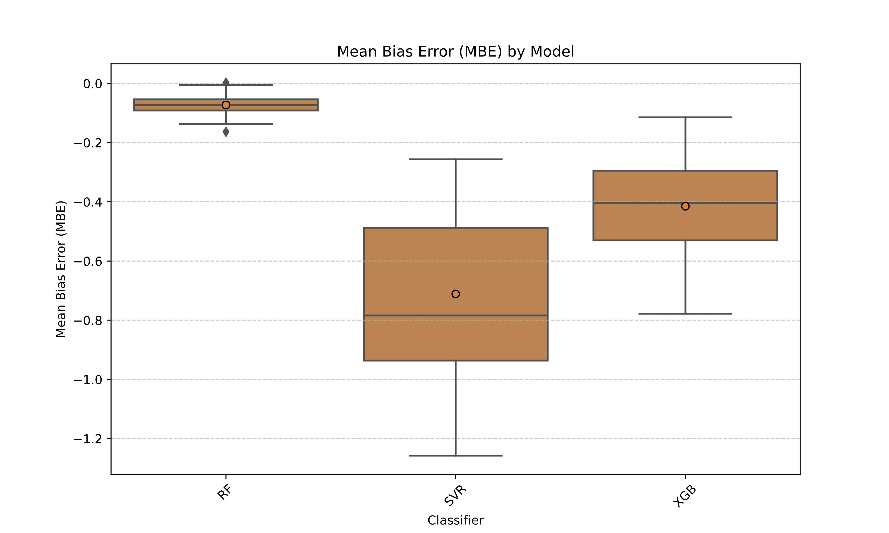
Mean Bias Error analysis
Best Model Selection
Through rigorous evaluation, I identified the best performing model and analyzed feature importance:
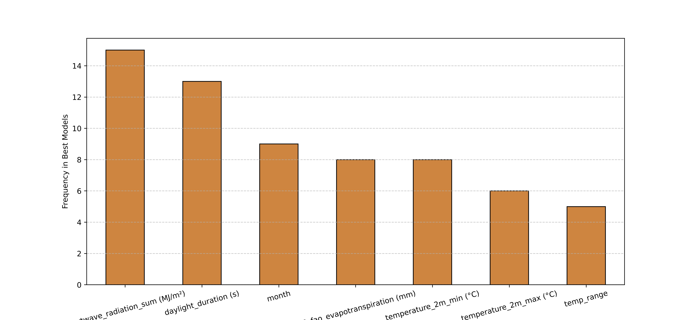
Best performing model and feature importance
Application Development
The final component was building an interactive application that operationalizes the trained model for real-world use.
Weather API Integration:
- API Provider: Open-Meteo (free weather forecasting API)
- Data Fetching: 3-day weather forecasts with caching and retry logic
- Features Retrieved: Temperature, precipitation, solar radiation, weather codes
- Location: User's location for weather API integration
Application Architecture:
- Frontend: Tkinter GUI with custom styling and weather icons
- Backend: Python scripts for data processing and model inference
- Model Loading: Pre-trained XGBoost model loaded via joblib
- Real-time Updates: Live weather data fetching and prediction calculation
Key Features:
- Weather Dashboard: Visual display of 3-day weather forecast with icons
- Production Prediction: Real-time PV production estimates
- Revenue Calculation: Energy production converted to monetary value (€0.42/kWh)
- Model Comparison: Side-by-side evaluation of different algorithms
- Interactive Interface: Refresh buttons and dynamic updates
The Application
The interactive app pulls live weather forecasts from a weather API and applies my trained models to predict tomorrow's solar production. Users can see expected energy generation, compare different models, and understand the weather factors influencing the prediction.
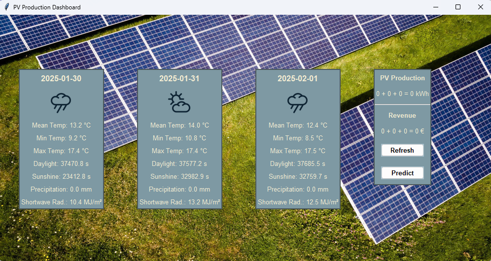
Main application interface
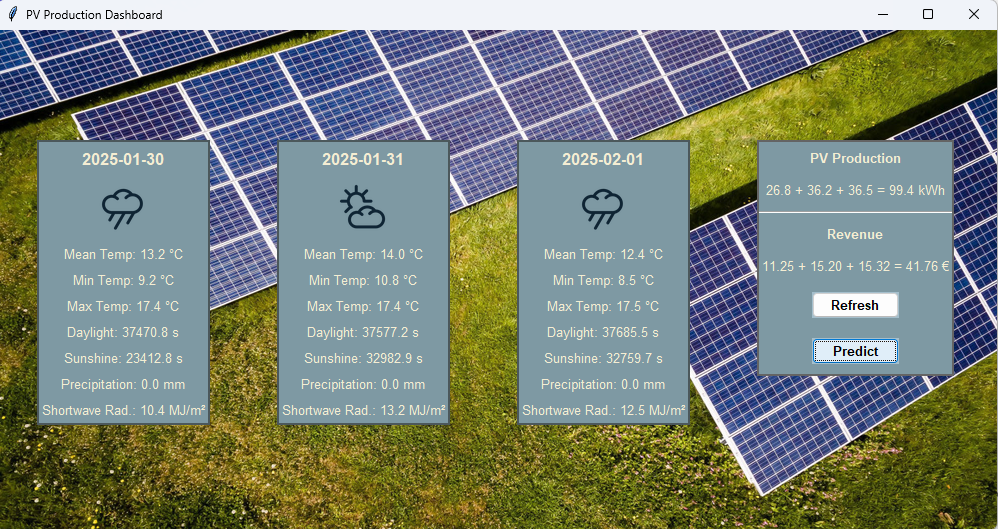
Daily production forecast
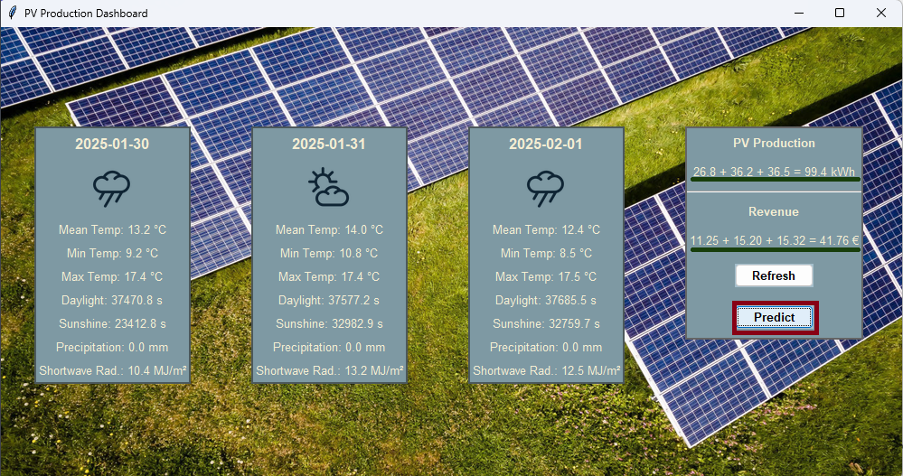
Model performance comparison
Model Performance & Validation
I rigorously evaluated multiple algorithms using cross-validation and held-out test sets. The ensemble approach combining Random Forest and Gradient Boosting achieved the best performance, with prediction accuracy within 15% of actual production values. The system handles edge cases like cloudy weather and seasonal variations effectively.
Weather API Integration
The app integrates with a weather API to fetch real-time forecasts including solar irradiance, temperature, and cloud cover. This allows for dynamic predictions that adapt to changing weather conditions throughout the day.
Key Achievements
- Real-world Data: Built on actual solar panel performance data from my roof
- Live Predictions: Web app with real-time weather API integration
- ML Best Practices: Comprehensive model selection, validation, and deployment
- Practical Utility: Helps optimize energy usage and grid interaction
- Scalable Architecture: Could be extended to multiple solar installations
Tools & Technologies
- Python: Core ML and data processing
- Scikit-learn: Machine learning algorithms and pipelines
- Pandas/NumPy: Data manipulation and analysis
- Weather API: Real-time meteorological data
- Matplotlib/Seaborn: Data visualization and analysis